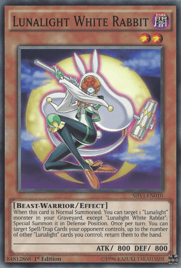
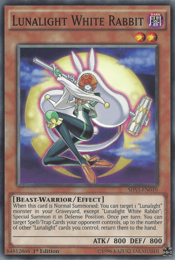
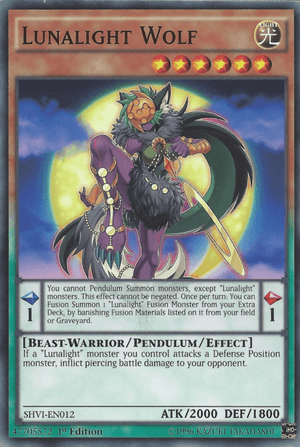
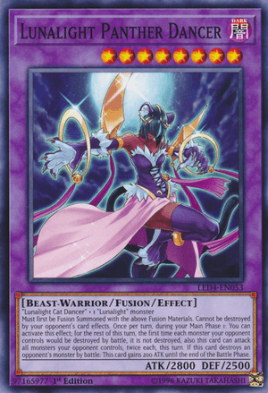
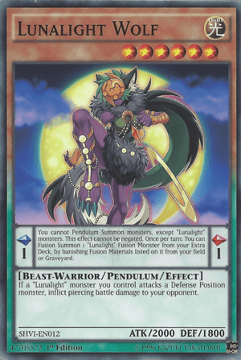
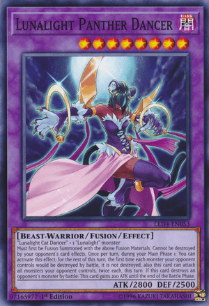

Lunalight Black Sheep:
You can discard this card, then activate 1 of these effects;
● Add 1 "Lunalight" monster from your Graveyard to your hand, except "Lunalight Black Sheep".
● Add 1 "Polymerization" from your Deck to your hand.
If this card is sent to the Graveyard as a Fusion Material for a Fusion Summon:
You can add to your hand, 1 face-up "Lunalight" Pendulum Monster from your Extra Deck or
1 "Lunalight" monster from your Graveyard, except "Lunalight Black Sheep".
Lunalight Blue Cat: If this card is Special Summoned: You can target 1 "Lunalight" monster you control, except "Lunalight Blue Cat"; its ATK becomes double its original ATK until the end of this turn. You can only use this effect of "Lunalight Blue Cat" once per turn. If this card on the field is destroyed by battle or card effect: You can Special Summon 1 "Lunalight" monster from your Deck.
Lunalight Crimson Fox: If this card is sent to the GY by a card effect: You can target 1 face-up monster your opponent controls; change its ATK to 0 until the end of this turn. When a card or effect is activated that targets a "Lunalight" monster(s) you control (Quick Effect): You can banish this card from your GY; negate the activation, and if you do, each player gains 1000 LP.
Lunalight Emerald Bird: If this card is Normal or Special Summoned: You can send 1 "Lunalight" card from your hand to the GY, and if you do, draw 1 card. If this card is sent to the GY by a card effect: You can target 1 of your Level 4 or lower "Lunalight" monsters that is banished or in your GY, except "Lunalight Emerald Bird"; Special Summon it in Defense Position, but negate its effects. You can only use each effect of "Lunalight Emerald Bird" once per turn.
Lunalight Yellow Marten: If this card is in your hand or GY: You can target 1 "Lunalight" card you control, except "Lunalight Yellow Marten"; return it to the hand, and if you do, Special Summon this card in Defense Position, but banish this card when it leaves the field. If this card is sent to the GY by a card effect: You can add 1 "Lunalight" Spell/Trap from your Deck to your hand. You can only use each effect of "Lunalight Yellow Marten" once per turn.
Lunalight White Rabbit: When this card is Normal Summoned: You can target 1 "Lunalight" monster in your Graveyard, except "Lunalight White Rabbit"; Special Summon it in Defense Position. Once per turn: You can target Spell/Trap Cards your opponent controls, up to the number of other "Lunalight" cards you control; return them to the hand.
Lunalight Kaleido Chick: Once per turn: You can send 1 "Lunalight" monster from your Deck or Extra Deck to the GY; the name of this face-up card on the field can be treated as the sent monster's, if used as Fusion Material this turn. If this card is sent to the GY by a card effect: You can target 1 "Polymerization" in your GY; add it to your hand. You can only use this effect of "Lunalight Kaleido Chick" once per turn. If this card is banished: You can activate this effect; this turn, your opponent's cards and effects cannot be activated during the Battle Phase.
Lunalight Purple Butterfly: You can send this card from your hand or field to the Graveyard, then target 1 "Lunalight" monster you control; it gains 1000 ATK until the end of this turn. You can banish this card from your Graveyard; Special Summon 1 "Lunalight" monster from your hand. You can only use this effect of "Lunalight Purple Butterfly" once per turn.
Lunalight Wolf:
Pendulum Effect
You cannot Pendulum Summon monsters, except "Lunalight" monsters. This effect cannot be negated.
Once per turn: You can Fusion Summon 1 "Lunalight" Fusion Monster from your Extra Deck,
by banishing Fusion Materials listed on it from your field or Graveyard.
Monster Effect
If a "Lunalight" monster you control attacks a Defense Position monster, inflict piercing battle damage to your opponent.
Lunalight Tiger:
Pendulum Effect
Once per turn: You can target 1 "Lunalight" monster in your Graveyard; Special Summon it, but it cannot attack,
its effects are negated, also it is destroyed during the End Phase.
Monster Effect
If this card on the field is destroyed by battle or card effect: You can target 1 "Lunalight" monster in your Graveyard;
Special Summon it. You can only use this effect of "Lunalight Tiger" once per turn.
Lunalight Cat Dancer:
2 "Lunalight" monsters
Cannot be destroyed by battle. Once per turn, during your Main Phase 1: You can Tribute 1 other "Lunalight" monster;
for the rest of this turn, the first time each monster your opponent controls would be destroyed by battle, it is not destroyed,
also this card can attack all monsters your opponent controls, twice each, this turn.
If this card declares an attack: Inflict 100 damage to your opponent.
Lunalight Panther Dancer:
"Lunalight Panther Dancer" + 2 "Lunalight" monsters
Must be Fusion Summoned with the above Fusion Materials. Your opponent cannot target this card with card effects,
also it cannot be destroyed by your opponent's card effects. This card can make a second attack during each Battle Phase.
Once per turn, at the end of the Damage Step, if this card attacked a monster:
You can destroy all Special Summoned monsters your opponent controls.
Lunalight Leo Dancer:
"Lunalight Cat Dancer" + 1 "Lunalight" monster
Must first be Fusion Summoned with the above Fusion Materials. Cannot be destroyed by your opponent's card effects.
Once per turn, during your Main Phase 1: You can activate this effect; for the rest of this turn,
the first time each monster your opponent controls would be destroyed by battle, it is not destroyed,
also this card can attack all monsters your opponent controls, twice each, this turn.
If this card destroys an opponent's monster by battle: This card gains 200 ATK until the end of the Battle Phase.
Lunalight Sabre Dancer:
3 "Lunalight" monsters
Must be Fusion Summoned. Gains 200 ATK for each Beast-Warrior monster that is banished or in the GYs.
Your opponent cannot target this card with card effects. During your Main Phase, except the turn this card was sent to the GY:
You can banish this card from your GY, then target 1 Fusion Monster you control; it gains 3000 ATK until the end of this turn.
You can only use this effect of "Lunalight Sabre Dancer" once per turn.
Designed after animals of ascending strength, these fierce ladies are all about battle prowess. Their effects vary from supportive battle tactics, to self destruction prevention from battle and/or effects. This could be taken as an artistic representation of their skill, against both physical and indirect damage. On the right side, you may scroll through their effects and artworks should you wish to inspect them further.
Luna Light Perfume: Target 1 "Lunalight" monster in your GY; Special Summon it. You can banish this card from your GY, then discard 1 card; add 1 "Lunalight" monster from your Deck to your hand.
Lunalight Fusion: Fusion Summon 1 "Lunalight" Fusion Monster from your Extra Deck, using monsters from your hand or field as Fusion Material. If your opponent controls a monster that was Special Summoned from the Extra Deck, you can also use 1 "Lunalight" monster in your Deck or Extra Deck as Fusion Material. You can only activate 1 "Lunalight Fusion" per turn.
Lunalight Reincarnation Dance: If a monster(s) you control is destroyed by battle or card effect: Add up to 2 "Lunalight" monsters from your Deck to your hand. You can only activate 1 "Lunalight Reincarnation Dance" per turn.
Lunalight Serenade Dance: When a Fusion Monster(s) is Fusion Summoned to your field (except during the Damage Step): You can target 1 of those monsters; apply these effects in sequence. ● Special Summon 1 "Lunalight Token" (Beast-Warrior/DARK/Level 4/ATK 2000/DEF 2000) to your opponent's field. ● That target gains 500 ATK for each monster your opponent controls (even if this card leaves the field). During your Main Phase: You can banish this card from your GY; send 1 card from your hand to the GY, and if you do, Special Summon 1 "Lunalight" monster from your Deck. You can only use this effect of "Lunalight Serenade Dance" once per turn.
 

 


